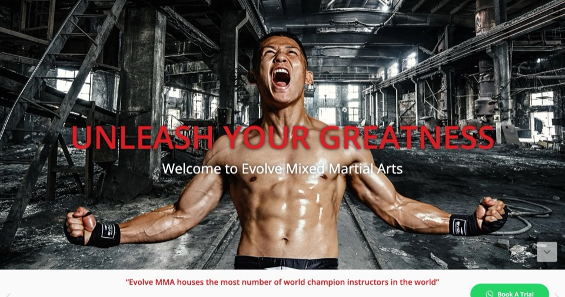
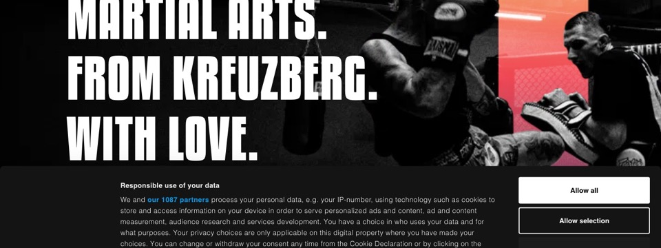
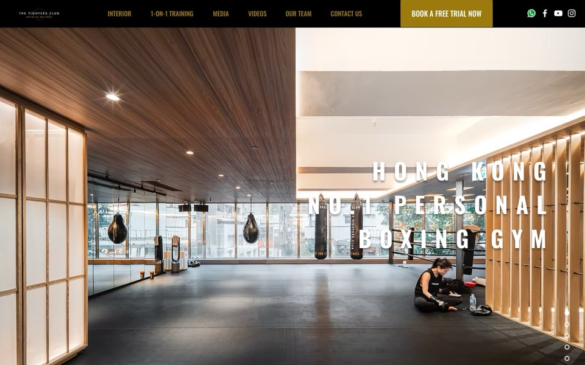
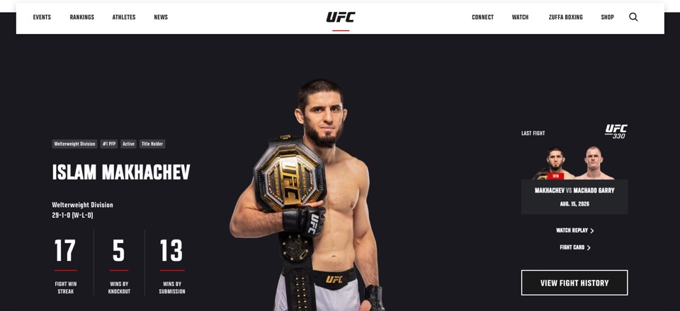

<title>Концепция сайта «Пересвет»</title>
<link rel="preconnect" href="https://fonts.googleapis.com">
<link rel="preconnect" href="https://fonts.gstatic.com" crossorigin>
<link rel="stylesheet" href="https://fonts.googleapis.com/css2?family=Alumni+Sans:wght@500;700;800&family=Cormorant:ital,wght@0,500;0,600;0,700;1,500&family=Golos+Text:wght@400;500;600&display=swap">
<style>
/* Layout: «Знамя» — длинное вертикальное полотно, как развёрнутый стяг; разделы отбиты золотыми звёздами, слева метки в спортивной узкой гарнитуре. */
:root {
  /* Цвет: синий флага клуба + золото звёзд, ночной фон, слоновая кость для текста */
  --night: #081127;
  --night-2: #0D1A3A;
  --night-3: #12224A;
  --banner: #1C3F9E;
  --banner-hi: #4A6FD6;
  --gold: #C8A45C;
  --gold-hi: #E6CB8A;
  --ivory: #EEE7D7;
  --mist: #9AA5C2;
  --line: rgba(200, 164, 92, .24);
  --line-soft: rgba(154, 165, 194, .16);
  --ok: #78C49A;
  --bad: #E08476;
  --warn: #E3BE62;

  /* Шрифты: торжественная антиква / спортивный узкий гротеск / рабочий текст */
  --f-display: "Cormorant", "Cormorant Garamond", Georgia, "Times New Roman", serif;
  --f-sport: "Alumni Sans", "Arial Narrow", "Roboto Condensed", sans-serif;
  --f-body: "Golos Text", "Segoe UI", Roboto, system-ui, sans-serif;
  --f-mono: ui-monospace, "SF Mono", Menlo, Consolas, monospace;

  --wrap: 1120px;
  --gutter: clamp(16px, 4vw, 40px);
  color-scheme: dark;
}

* { box-sizing: border-box; }
html { scroll-behavior: smooth; }
@media (prefers-reduced-motion: reduce) { html { scroll-behavior: auto; } }

body {
  background: var(--night);
  color: var(--ivory);
  font: 400 16px/1.65 var(--f-body);
  -webkit-font-smoothing: antialiased;
}
a { color: var(--gold-hi); text-underline-offset: 3px; text-decoration-thickness: 1px; }
a:hover { color: var(--ivory); }
:focus-visible { outline: 2px solid var(--gold-hi); outline-offset: 3px; border-radius: 2px; }

.wrap { max-width: var(--wrap); margin-inline: auto; padding-inline: var(--gutter); }

/* ---------- Навигация ---------- */
.topnav {
  position: sticky; top: env(safe-area-inset-top, 0px); z-index: 20;
  background: rgba(8, 17, 39, .86);
  backdrop-filter: blur(10px); -webkit-backdrop-filter: blur(10px);
  border-bottom: 1px solid var(--line-soft);
}
.topnav .wrap { display: flex; align-items: center; gap: 24px; min-height: 52px; }
.topnav .brand { font: 700 15px/1 var(--f-sport); letter-spacing: .28em; text-transform: uppercase; color: var(--gold); white-space: nowrap; text-decoration: none; }
.topnav nav { overflow-x: auto; scrollbar-width: none; flex: 1; min-width: 0; }
.topnav nav::-webkit-scrollbar { display: none; }
.topnav ul { display: flex; gap: 20px; list-style: none; margin: 0; padding: 0; white-space: nowrap; }
.topnav nav a { font: 600 13px/1 var(--f-body); color: var(--mist); text-decoration: none; padding-block: 18px; display: inline-block; }
.topnav nav a:hover { color: var(--ivory); }

/* ---------- Герой ---------- */
.hero {
  position: relative; overflow: hidden;
  background:
    radial-gradient(1200px 600px at 78% 40%, rgba(28, 63, 158, .55), transparent 60%),
    radial-gradient(700px 400px at 10% 110%, rgba(28, 63, 158, .35), transparent 70%),
    var(--night);
  border-bottom: 1px solid var(--line);
}
.hero .wrap { display: grid; grid-template-columns: 1.15fr .85fr; gap: clamp(24px, 5vw, 64px); align-items: center; padding-block: clamp(48px, 9vw, 112px); }
.eyebrow { font: 700 14px/1.2 var(--f-sport); letter-spacing: .24em; text-transform: uppercase; color: var(--gold); }
.hero h1 {
  font: 600 clamp(64px, 12vw, 148px)/.86 var(--f-display);
  letter-spacing: .02em; text-transform: uppercase; margin: 18px 0 18px;
  background: linear-gradient(180deg, var(--gold-hi) 0%, var(--gold) 55%, #9C7B3C 100%);
  -webkit-background-clip: text; background-clip: text; color: transparent;
}
.hero .lead { font: 500 clamp(19px, 2.2vw, 24px)/1.35 var(--f-display); font-style: italic; color: var(--ivory); margin: 0 0 22px; max-width: 30ch; }
.hero p { color: var(--mist); max-width: 58ch; margin: 0; }
.hero-meta { display: flex; flex-wrap: wrap; gap: 8px 22px; margin-top: 28px; font: 700 15px/1 var(--f-sport); letter-spacing: .14em; text-transform: uppercase; color: var(--mist); }
.hero-meta b { color: var(--ivory); font-weight: 700; }

.emblem { position: relative; width: 100%; max-width: 420px; aspect-ratio: 1; justify-self: center; color: var(--gold); }
.emblem .ring { position: absolute; inset: 0; }
.emblem .ring svg { width: 100%; height: 100%; display: block; }
.spin svg { animation: spin 140s linear infinite; }
@keyframes spin { to { transform: rotate(360deg); } }
@media (prefers-reduced-motion: reduce) { .spin svg { animation: none; } }
.emblem .core {
  position: absolute; inset: 22%; border-radius: 50%;
  border: 1px solid var(--line);
  background: radial-gradient(circle at 50% 35%, rgba(74, 111, 214, .45), rgba(28, 63, 158, .2) 60%, transparent 75%);
  display: grid; place-items: center; text-align: center;
}
.emblem .core span { font: 600 clamp(80px, 11vw, 132px)/1 var(--f-display); color: var(--gold-hi); }
.emblem figcaption { position: absolute; left: 0; right: 0; bottom: -34px; text-align: center; font-size: 12.5px; color: var(--mist); }

/* ---------- Разделы ---------- */
section.block { padding-block: clamp(56px, 8vw, 96px); border-bottom: 1px solid var(--line-soft); }
.sec-head { display: grid; grid-template-columns: 180px 1fr; gap: 12px 32px; margin-bottom: clamp(28px, 4vw, 44px); }
.sec-head .eyebrow { padding-top: 12px; }
.sec-head h2 { font: 600 clamp(34px, 5vw, 56px)/1.02 var(--f-display); margin: 0; text-wrap: balance; }
.sec-head p { grid-column: 2; color: var(--mist); margin: 6px 0 0; max-width: 64ch; }
.body-col { margin-left: 212px; }
h3 { font: 600 26px/1.15 var(--f-display); margin: 0 0 8px; text-wrap: balance; }
.label { font: 700 13px/1.2 var(--f-sport); letter-spacing: .2em; text-transform: uppercase; color: var(--gold); }
.muted { color: var(--mist); }
.small { font-size: 14px; }

.divider { display: flex; justify-content: center; gap: 14px; color: var(--gold); padding-block: 4px; }
.divider svg { width: 12px; height: 12px; }

/* ---------- Идея ---------- */
.pillars { display: grid; grid-template-columns: repeat(3, 1fr); gap: 1px; background: var(--line); border: 1px solid var(--line); }
.pillar { background: var(--night); padding: 28px 26px 30px; min-width: 0; }
.pillar .label { display: block; margin-bottom: 14px; }
.pillar p { margin: 0; color: var(--mist); }
.quote { margin: 40px 0 0; padding: 0 0 0 24px; border-left: 2px solid var(--gold); font: 500 clamp(22px, 2.6vw, 28px)/1.35 var(--f-display); font-style: italic; max-width: 46ch; }

/* ---------- Референсы ---------- */
.refs { display: grid; grid-template-columns: repeat(2, 1fr); gap: clamp(20px, 3vw, 36px); }
.ref { min-width: 0; display: flex; flex-direction: column; gap: 14px; }
.ref .shot { display: block; aspect-ratio: 16 / 10; max-width: 100%; overflow: hidden; border: 1px solid var(--line-soft); background: var(--night-2); }
.ref .shot img { width: 100%; height: 100%; object-fit: cover; object-position: top center; display: block; transition: transform .6s ease; }
.ref .shot:hover img { transform: scale(1.03); }
@media (prefers-reduced-motion: reduce) { .ref .shot img { transition: none; } }
.ref-top { display: flex; justify-content: space-between; align-items: baseline; gap: 12px; flex-wrap: wrap; }
.ref-top h3 { margin: 0; }
.ref-top a { font: 700 14px/1 var(--f-sport); letter-spacing: .12em; text-transform: uppercase; }
.take { display: grid; gap: 6px; margin: 0; padding: 0; list-style: none; font-size: 15px; }
.take li { display: grid; grid-template-columns: 74px 1fr; gap: 10px; }
.take li span:first-child { font: 700 13px/1.6 var(--f-sport); letter-spacing: .16em; text-transform: uppercase; }
.take .yes span:first-child { color: var(--ok); }
.take .no span:first-child { color: var(--bad); }
.take li span:last-child { color: var(--mist); }
.refs-more { margin-top: 32px; display: grid; grid-template-columns: repeat(2, 1fr); gap: 1px; background: var(--line-soft); border: 1px solid var(--line-soft); }
.refs-more > div { background: var(--night); padding: 20px 22px; min-width: 0; }
.refs-more h4 { margin: 0 0 4px; font: 600 20px/1.2 var(--f-display); }
.refs-more p { margin: 0; color: var(--mist); font-size: 15px; }

/* ---------- Стиль: три направления ---------- */
.dirs { display: grid; grid-template-columns: repeat(3, 1fr); gap: 22px; }
.dir { min-width: 0; display: flex; flex-direction: column; gap: 14px; }
.dir .tag { align-self: flex-start; font: 700 13px/1 var(--f-sport); letter-spacing: .16em; text-transform: uppercase; padding: 6px 10px 5px; border: 1px solid var(--line); color: var(--mist); }
.dir.pick .tag { background: var(--gold); color: var(--night); border-color: var(--gold); }
.dir p { margin: 0; color: var(--mist); font-size: 15px; }

.mock { container-type: inline-size; aspect-ratio: 4 / 3; max-width: 100%; overflow: hidden; position: relative; border: 1px solid var(--line-soft); }
.mock-bar { position: absolute; top: 0; left: 0; right: 0; display: flex; align-items: center; justify-content: space-between; gap: 4cqw; padding: 4cqw 5cqw; font-size: 3.2cqw; z-index: 2; }
.mk-logo { font-weight: 700; letter-spacing: .2em; }
.mk-nav { opacity: .7; white-space: nowrap; overflow: hidden; text-overflow: ellipsis; }
.mk-btn { padding: 1.4cqw 3cqw; white-space: nowrap; }

/* A — Знамя */
.mock-a { background: radial-gradient(80% 70% at 50% 45%, #1C3F9E 0%, #0D1A3A 60%, #081127 100%); color: #EEE7D7; }
.mock-a .mock-bar { font-family: var(--f-sport); text-transform: uppercase; }
.mock-a .mk-logo { color: #C8A45C; }
.mock-a .mk-btn { border: 1px solid #C8A45C; color: #E6CB8A; }
.mock-a .ring { position: absolute; width: 62cqw; aspect-ratio: 1; left: 19cqw; top: 13cqw; color: #C8A45C; opacity: .9; }
.mock-a .ring svg { width: 100%; height: 100%; }
.mock-a .mk-center { position: absolute; inset: 0; display: grid; place-content: center; text-align: center; padding-top: 6cqw; }
.mock-a .mk-title { font: 600 13cqw/1 var(--f-display); text-transform: uppercase; letter-spacing: .03em; color: #E6CB8A; }
.mock-a .mk-sub { font: 500 3.4cqw/1.3 var(--f-display); font-style: italic; margin-top: 2cqw; }

/* B — Арена */
.mock-b { background: linear-gradient(115deg, #05080F 0%, #05080F 48%, #0F1C3D 48.2%, #1B2C57 100%); color: #fff; }
.mock-b .mock-bar { font-family: var(--f-sport); text-transform: uppercase; }
.mock-b .mk-btn { background: #C8A45C; color: #05080F; font-weight: 700; }
.mock-b .mk-hero { position: absolute; left: 5cqw; bottom: 18cqw; font: 800 12.5cqw/.86 var(--f-sport); text-transform: uppercase; }
.mock-b .mk-hero em { font-style: normal; color: #C8A45C; }
.mock-b .mk-stats { position: absolute; left: 5cqw; right: 5cqw; bottom: 5cqw; display: grid; grid-template-columns: repeat(3, 1fr); gap: 3cqw; border-top: 1px solid rgba(255,255,255,.18); padding-top: 3cqw; }
.mock-b .mk-stats b { display: block; font: 800 8cqw/1 var(--f-sport); color: #fff; }
.mock-b .mk-stats span { font: 600 2.6cqw/1.2 var(--f-body); color: #9AA5C2; text-transform: uppercase; letter-spacing: .08em; }
.mock-b .mk-figure { position: absolute; right: -8cqw; top: 8cqw; width: 60cqw; aspect-ratio: 1; color: rgba(200,164,92,.35); }
.mock-b .mk-figure svg { width: 100%; height: 100%; }

/* C — Небо */
.mock-c { background: #EEF5FF; color: #0E2350; font-family: var(--f-body); }
.mock-c .mk-logo { color: #1F5BFF; letter-spacing: .04em; }
.mock-c .mk-btn { background: #1F5BFF; color: #fff; border-radius: 99px; font-weight: 600; }
.mock-c .mk-hero { position: absolute; left: 5cqw; right: 5cqw; top: 18cqw; font: 600 7cqw/1.08 var(--f-body); letter-spacing: -.01em; }
.mock-c .mk-cards { position: absolute; left: 5cqw; right: 5cqw; bottom: 6cqw; display: grid; grid-template-columns: repeat(3, 1fr); gap: 2.6cqw; }
.mock-c .mk-cards div { background: #fff; border-radius: 3cqw; padding: 3cqw; font-size: 3cqw; font-weight: 600; box-shadow: 0 1cqw 3cqw rgba(31, 91, 255, .12); }
.mock-c .mk-cards i { display: block; width: 6cqw; height: 6cqw; border-radius: 50%; background: #CFE0FF; margin-bottom: 2cqw; }

.palette { margin-top: 44px; display: grid; grid-template-columns: repeat(5, 1fr); gap: 12px; }
.sw { min-width: 0; }
.sw i { display: block; aspect-ratio: 3 / 2; border: 1px solid var(--line-soft); }
.sw b { display: block; margin-top: 10px; font: 600 19px/1.2 var(--f-display); }
.sw span { font-size: 13px; color: var(--mist); }
.type-row { margin-top: 40px; display: grid; grid-template-columns: repeat(3, 1fr); gap: 1px; background: var(--line-soft); border: 1px solid var(--line-soft); }
.type-row > div { background: var(--night); padding: 22px; min-width: 0; }
.type-row .s1 { font: 600 42px/1 var(--f-display); text-transform: uppercase; color: var(--gold-hi); }
.type-row .s2 { font: 800 46px/1 var(--f-sport); text-transform: uppercase; }
.type-row .s3 { font: 400 17px/1.5 var(--f-body); }
.type-row p { margin: 12px 0 0; font-size: 13.5px; color: var(--mist); }

/* ---------- Клуб: факты ---------- */
.facts { display: grid; grid-template-columns: repeat(2, 1fr); gap: 22px; }
.fact { background: var(--night-2); border: 1px solid var(--line-soft); padding: 26px; min-width: 0; display: flex; flex-direction: column; gap: 12px; }
.fact.wide { grid-column: 1 / -1; }
.fact h3 { margin: 0; }
.fact p, .fact ul { margin: 0; color: var(--ivory); }
.fact ul { padding-left: 18px; display: grid; gap: 6px; }
.fact ul li::marker { color: var(--gold); }
.fact .src { font-size: 13px; color: var(--mist); }
.chip { display: inline-flex; align-items: center; gap: 6px; font: 700 12.5px/1 var(--f-sport); letter-spacing: .14em; text-transform: uppercase; padding: 6px 9px 5px; border: 1px solid; align-self: flex-start; }
.chip.check { color: var(--warn); border-color: rgba(227, 190, 98, .45); }
.chip.okc { color: var(--ok); border-color: rgba(120, 196, 154, .45); }
.bz { display: grid; grid-template-columns: 1fr 1fr; gap: 26px; }
.bz > div { min-width: 0; display: grid; gap: 8px; align-content: start; }
.note { border-left: 2px solid var(--warn); padding: 4px 0 4px 16px; color: var(--mist); font-size: 14.5px; }

/* ---------- Карта сайта ---------- */
.root-node { display: flex; align-items: center; gap: 16px; flex-wrap: wrap; padding: 18px 22px; border: 1px solid var(--gold); background: linear-gradient(90deg, rgba(28, 63, 158, .5), transparent); margin-bottom: 22px; }
.root-node h3 { margin: 0; }
.url { font: 500 13px/1.4 var(--f-mono); color: var(--gold-hi); word-break: break-all; }
.tree { display: grid; grid-template-columns: repeat(3, 1fr); gap: 16px; }
.node { border: 1px solid var(--line-soft); background: var(--night-2); padding: 18px 20px; min-width: 0; display: flex; flex-direction: column; gap: 8px; }
.node.star { border-color: var(--gold); background: linear-gradient(160deg, rgba(28, 63, 158, .55), var(--night-2) 70%); }
.node h4 { margin: 0; font: 600 21px/1.15 var(--f-display); }
.node p { margin: 0; font-size: 14.5px; color: var(--mist); }
.node ul { margin: 4px 0 0; padding: 0; list-style: none; display: grid; gap: 4px; }
.node li { font-size: 14px; color: var(--ivory); padding-left: 14px; position: relative; }
.node li::before { content: ""; position: absolute; left: 0; top: .7em; width: 7px; height: 1px; background: var(--gold); }
.home-flow { margin-top: 36px; }
.home-flow ol { margin: 14px 0 0; padding: 0; list-style: none; display: grid; grid-template-columns: repeat(5, 1fr); gap: 1px; background: var(--line-soft); border: 1px solid var(--line-soft); counter-reset: s; }
.home-flow li { background: var(--night); padding: 16px 16px 18px; counter-increment: s; font-size: 14.5px; min-width: 0; }
.home-flow li::before { content: counter(s, decimal-leading-zero); display: block; font: 800 26px/1 var(--f-sport); color: var(--gold); margin-bottom: 8px; }
.home-flow li span { display: block; color: var(--mist); font-size: 13px; margin-top: 2px; }

/* ---------- Заявки ---------- */
.flow { display: grid; grid-template-columns: 1fr auto 1fr auto 1fr; align-items: stretch; gap: 0; }
.step { border: 1px solid var(--line-soft); background: var(--night-2); padding: 20px; min-width: 0; display: flex; flex-direction: column; gap: 8px; }
.step.main { border-color: var(--gold); }
.step h4 { margin: 0; font: 600 21px/1.15 var(--f-display); }
.step p { margin: 0; font-size: 14.5px; color: var(--mist); }
.arrow { display: grid; place-items: center; padding: 0 10px; color: var(--gold); font: 700 26px/1 var(--f-sport); }
.channels { margin-top: 26px; display: grid; grid-template-columns: repeat(4, 1fr); gap: 1px; background: var(--line-soft); border: 1px solid var(--line-soft); }
.channels > div { background: var(--night); padding: 18px 18px 20px; min-width: 0; display: flex; flex-direction: column; gap: 6px; }
.channels b { font: 600 20px/1.2 var(--f-display); }
.channels p { margin: 0; font-size: 14px; color: var(--mist); }
.status { font: 700 12.5px/1 var(--f-sport); letter-spacing: .14em; text-transform: uppercase; }
.status.g { color: var(--ok); } .status.r { color: var(--bad); } .status.y { color: var(--warn); }
.legal { margin-top: 30px; display: grid; grid-template-columns: repeat(2, 1fr); gap: 10px 32px; padding: 0; list-style: none; }
.legal li { display: grid; grid-template-columns: 22px 1fr; gap: 8px; font-size: 15px; }
.legal li::before { content: "✦"; color: var(--gold); font-size: 13px; line-height: 1.9; }

/* ---------- Хостинг ---------- */
.table-wrap { overflow-x: auto; border: 1px solid var(--line-soft); }
table { border-collapse: collapse; width: 100%; min-width: 720px; font-size: 15px; }
th, td { text-align: left; vertical-align: top; padding: 14px 16px; border-bottom: 1px solid var(--line-soft); }
th { font: 700 13px/1.2 var(--f-sport); letter-spacing: .16em; text-transform: uppercase; color: var(--gold); background: var(--night-2); }
tr:last-child td { border-bottom: 0; }
td b { font-weight: 600; }
tr.rec td { background: rgba(28, 63, 158, .28); }
.num { font-variant-numeric: tabular-nums; white-space: nowrap; }
.budget { margin-top: 30px; display: grid; grid-template-columns: repeat(3, 1fr); gap: 1px; background: var(--line); border: 1px solid var(--line); }
.budget > div { background: var(--night); padding: 22px; min-width: 0; }
.budget b { display: block; font: 800 44px/1 var(--f-sport); color: var(--ivory); font-variant-numeric: tabular-nums; margin: 8px 0 6px; }
.budget p { margin: 0; font-size: 14px; color: var(--mist); }
.domains { margin-top: 30px; display: flex; flex-wrap: wrap; gap: 10px; }
.dom { font: 500 14px/1 var(--f-mono); padding: 10px 12px; border: 1px solid var(--line-soft); background: var(--night-2); }
.dom.free::after { content: "свободен"; margin-left: 10px; font: 700 12px/1 var(--f-sport); letter-spacing: .14em; text-transform: uppercase; color: var(--ok); }
.dom.taken { color: var(--mist); text-decoration: line-through; }
.dom.taken::after { content: "занят"; margin-left: 10px; font: 700 12px/1 var(--f-sport); letter-spacing: .14em; text-transform: uppercase; color: var(--bad); display: inline-block; text-decoration: none; }
.dom.best { border-color: var(--gold); }

/* ---------- План ---------- */
.plan { list-style: none; margin: 0; padding: 0; display: grid; gap: 0; counter-reset: p; }
.plan li { display: grid; grid-template-columns: 90px 1fr auto; gap: 20px; align-items: baseline; padding: 20px 0; border-top: 1px solid var(--line-soft); counter-increment: p; }
.plan li::before { content: counter(p); font: 800 54px/.8 var(--f-sport); color: var(--gold); }
.plan h4 { margin: 0 0 4px; font: 600 23px/1.2 var(--f-display); }
.plan p { margin: 0; color: var(--mist); font-size: 15px; max-width: 62ch; }
.plan .when { font: 700 13px/1 var(--f-sport); letter-spacing: .16em; text-transform: uppercase; color: var(--mist); white-space: nowrap; }
.plan li.now .when { color: var(--gold); }

/* ---------- Чек-лист ---------- */
.checklist { list-style: none; margin: 0; padding: 0; display: grid; grid-template-columns: repeat(2, 1fr); gap: 1px; background: var(--line-soft); border: 1px solid var(--line-soft); }
.checklist li { background: var(--night); min-width: 0; }
.checklist label { display: grid; grid-template-columns: 22px 1fr; gap: 14px; padding: 18px 20px; cursor: pointer; }
.checklist input { appearance: none; -webkit-appearance: none; width: 20px; height: 20px; border: 1px solid var(--gold); margin: 3px 0 0; display: grid; place-items: center; cursor: pointer; background: transparent; }
.checklist input::after { content: ""; width: 10px; height: 10px; background: var(--gold); transform: scale(0); transition: transform .15s; clip-path: polygon(50% 0, 61% 35%, 98% 35%, 68% 57%, 79% 91%, 50% 70%, 21% 91%, 32% 57%, 2% 35%, 39% 35%); }
.checklist input:checked::after { transform: scale(1.3); }
.checklist b { display: block; font-weight: 600; }
.checklist span { display: block; font-size: 14px; color: var(--mist); margin-top: 2px; }
.checklist li:has(input:checked) b { color: var(--mist); text-decoration: line-through; text-decoration-color: var(--gold); }

/* ---------- Источники ---------- */
.sources { columns: 2; column-gap: 40px; font-size: 14px; padding-left: 18px; margin: 0; }
.sources li { break-inside: avoid; margin-bottom: 8px; color: var(--mist); }
footer { padding-block: 40px 56px; color: var(--mist); font-size: 13.5px; }
footer .wrap { display: flex; justify-content: space-between; flex-wrap: wrap; gap: 12px; }

/* ---------- Адаптив ---------- */
@media (max-width: 960px) {
  .hero .wrap { grid-template-columns: 1fr; }
  .emblem { max-width: 320px; margin-bottom: 40px; }
  .sec-head { grid-template-columns: 1fr; }
  .sec-head p { grid-column: 1; }
  .sec-head .eyebrow { padding-top: 0; }
  .body-col { margin-left: 0; }
  .dirs { grid-template-columns: 1fr; max-width: 560px; }
  .tree { grid-template-columns: repeat(2, 1fr); }
  .home-flow ol { grid-template-columns: repeat(2, 1fr); }
  .flow { grid-template-columns: 1fr; }
  .arrow { padding: 8px 0; transform: rotate(90deg); }
  .channels { grid-template-columns: repeat(2, 1fr); }
  .palette { grid-template-columns: repeat(3, 1fr); }
}
@media (max-width: 680px) {
  .pillars, .refs, .refs-more, .facts, .bz, .tree, .legal, .budget, .checklist, .type-row { grid-template-columns: 1fr; }
  .palette { grid-template-columns: repeat(2, 1fr); }
  .channels { grid-template-columns: 1fr; }
  .home-flow ol { grid-template-columns: 1fr 1fr; }
  .plan li { grid-template-columns: 52px 1fr; }
  .plan li::before { font-size: 40px; }
  .plan .when { grid-column: 2; }
  .sources { columns: 1; }
  .take li { grid-template-columns: 64px 1fr; }
}
</style>

<svg width="0" height="0" style="position:absolute" aria-hidden="true">
  <defs>
    <symbol id="star" viewBox="-1 -1 2 2"><polygon points="0,-1 0.2245,-0.309 0.9511,-0.309 0.3633,0.118 0.5878,0.809 0,0.382 -0.5878,0.809 -0.3633,0.118 -0.9511,-0.309 -0.2245,-0.309" fill="currentColor"/></symbol>
  </defs>
</svg>

<header class="topnav">
  <div class="wrap">
    <a class="brand" href="#top">Пересвет</a>
    <nav aria-label="Разделы концепции">
      <ul>
        <li><a href="#ideya">Идея</a></li>
        <li><a href="#referensy">Референсы</a></li>
        <li><a href="#stil">Стиль</a></li>
        <li><a href="#klub">О клубе</a></li>
        <li><a href="#karta">Страницы</a></li>
        <li><a href="#zayavki">Заявки</a></li>
        <li><a href="#hosting">Хостинг</a></li>
        <li><a href="#plan">План</a></li>
        <li><a href="#nuzhno">Что нужно</a></li>
      </ul>
    </nav>
  </div>
</header>

<main id="top">
  <section class="hero">
    <div class="wrap">
      <div>
        <div class="eyebrow">Концепция сайта · 16 октября 2026</div>
        <h1>Пересвет</h1>
        <p class="lead">Центр традиционных боевых искусств. Армавир, Краснодарский край.</p>
        <p>Здесь собрано всё для первого шага: какие сайты берём за ориентир, в каком стиле делаем, какие будут страницы, куда пойдут заявки и где сайт будет жить. Сама эта страница оформлена в предлагаемом стиле: синий флага клуба, золото звёзд, торжественная антиква.</p>
        <div class="hero-meta"><span><b>6</b> референсов</span><span><b>3</b> направления стиля</span><span><b>10</b> разделов сайта</span></div>
      </div>
      <figure class="emblem" style="margin:0">
        <div class="ring spin" data-stars="16" data-r="44" data-size="3.3"></div>
        <div class="core"><span>П</span></div>
        <figcaption>Кольцо звёзд с флага. В центр встанет Пересвет на коне из герба</figcaption>
      </figure>
    </div>
  </section>

  <!-- РЕШЕНИЯ -->
  <section class="block" id="resheniya" style="background:linear-gradient(180deg, rgba(28,63,158,.28), transparent)">
    <div class="wrap">
      <div class="sec-head">
        <div class="eyebrow">Решено 16 октября</div>
        <h2>Что согласовали</h2>
        <p>Каркас сайта уже собран по этим решениям. Ниже на странице сохранена исходная концепция.</p>
      </div>
      <div class="pillars">
        <div class="pillar"><span class="label">Стиль</span><h3>«Знамя» + «Арена»</h3><p>Синий и золото для главной, клуба и страницы Т. Б. Базарова. Тёмная «Арена» для новостей и бойцов. Плавная прокрутка и анимации, как у Fenriz Gym.</p></div>
        <div class="pillar"><span class="label">Страницы</span><h3>Блог вместо галереи</h3><p>Соревнования живут внутри новостей с фильтром: анонсы, результаты, события. Всплывающая заявка через 12 секунд на сайте.</p></div>
        <div class="pillar"><span class="label">Данные</span><h3>Имена и залы</h3><p>Индралиев Алибек Асанбиевич, Егор Ненахов. Залы: ул. Володарского, 55 (новый) и Дом офицеров. Бойцы: Михаил Базаров, Арслан и Давид Азаматовы.</p></div>
        <div class="pillar"><span class="label">Хостинг</span><h3>Timeweb</h3><p>Домены на выбор: пересвет-армавир.рф и peresvet-arm.ru. Рекомендация: взять оба, основной .рф.</p></div>
        <div class="pillar"><span class="label">Документы</span><h3>Оператор данных — ИП</h3><p>Реквизиты ИП подставим в политику и согласие перед запуском.</p></div>
        <div class="pillar"><span class="label">Код</span><h3>Закрытый репозиторий</h3><p>Проект хранится в приватном репозитории на GitHub.</p></div>
      </div>
    </div>
  </section>

  <!-- ИДЕЯ -->
  <section class="block" id="ideya">
    <div class="wrap">
      <div class="sec-head">
        <div class="eyebrow">Идея</div>
        <h2>Сайт как знамя клуба</h2>
        <p>Это не продающий лендинг с ценами. Человек заходит, видит историю, тренеров, чемпионов и результаты и понимает: здесь серьёзная школа. Записаться при этом можно в один клик с любой страницы.</p>
      </div>
      <div class="body-col">
        <div class="pillars">
          <div class="pillar"><span class="label">Престиж</span><h3>Геральдика флага</h3><p>Глубокий синий, золото, кольцо звёзд, богатырь. Строгая антиква в заголовках. Без кислотных цветов и «распродажных» плашек.</p></div>
          <div class="pillar"><span class="label">Спорт</span><h3>Цифры и результаты</h3><p>Календарь турниров, протоколы, медали, звания. Крупные цифры, как в карточках бойцов UFC. Сайт показывает, что клуб побеждает.</p></div>
          <div class="pillar"><span class="label">Живой</span><h3>Обновляется после каждого турнира</h3><p>Вы присылаете фото и пару строк, я добавляю новость, результаты и альбом. Сайт не стареет через полгода.</p></div>
        </div>
        <p class="quote">Посетитель должен сказать «вот это уровень» за первые три секунды и остаться читать.</p>
      </div>
    </div>
  </section>

  <!-- РЕФЕРЕНСЫ -->
  <section class="block" id="referensy">
    <div class="wrap">
      <div class="sec-head">
        <div class="eyebrow">Референсы</div>
        <h2>На что ориентируемся</h2>
        <p>Лучшие сайты бойцовских клубов мира. Ни один не копируем целиком: у каждого берём конкретную сильную сторону. Скриншоты сняты 16 октября 2026, картинки кликабельны.</p>
      </div>
      <div class="refs">
        <article class="ref">
          <a class="shot" href="https://evolve-mma.com/" target="_blank" rel="noopener"></a>
          <div class="ref-top"><h3>Evolve MMA, Сингапур</h3><a href="https://evolve-mma.com/" target="_blank" rel="noopener">evolve-mma.com ↗</a></div>
          <ul class="take">
            <li class="yes"><span>Берём</span><span>Раздел «Чемпионы-тренеры» с регалиями, повтор кнопки записи по всей странице, блок «О нас пишут».</span></li>
            <li class="no"><span>Не берём</span><span>Кричащий красный и агрессивную подачу.</span></li>
          </ul>
        </article>
        <article class="ref">
          <a class="shot" href="https://www.fenriz-gym.com/" target="_blank" rel="noopener"></a>
          <div class="ref-top"><h3>Fenriz Gym, Берлин</h3><a href="https://www.fenriz-gym.com/" target="_blank" rel="noopener">fenriz-gym.com ↗</a></div>
          <ul class="take">
            <li class="yes"><span>Берём</span><span>Огромную типографику поверх фото тренировки, характер зала с первого экрана.</span></li>
            <li class="no"><span>Не берём</span><span>Розово-оранжевые акценты, у нас синий и золото.</span></li>
          </ul>
        </article>
        <article class="ref">
          <a class="shot" href="https://www.thefightersclub.com.hk/" target="_blank" rel="noopener"></a>
          <div class="ref-top"><h3>The Fighters Club, Гонконг</h3><a href="https://www.thefightersclub.com.hk/" target="_blank" rel="noopener">thefightersclub.com.hk ↗</a></div>
          <ul class="take">
            <li class="yes"><span>Берём</span><span>Золото на тёмном, одна заметная кнопка записи в шапке, портреты тренеров в едином стиле.</span></li>
            <li class="no"><span>Не берём</span><span>Разрядку букв в заголовке: на кириллице читается плохо.</span></li>
          </ul>
        </article>
        <article class="ref">
          <a class="shot" href="https://www.ufc.com/athletes" target="_blank" rel="noopener"></a>
          <div class="ref-top"><h3>UFC, карточка бойца</h3><a href="https://www.ufc.com/athletes" target="_blank" rel="noopener">ufc.com ↗</a></div>
          <ul class="take">
            <li class="yes"><span>Берём</span><span>Для страниц бойцов и тренеров: плашки с регалиями, крупные цифры побед, история выступлений.</span></li>
            <li class="no"><span>Не берём</span><span>Перегруженную шапку и рекламу.</span></li>
          </ul>
        </article>
      </div>
      <div class="refs-more">
        <div><h4>Temple Noble Art, Париж</h4><p>Плавные анимации при прокрутке, заставка при загрузке, раздел «Вопросы новичков». <a href="https://www.temple-nobleart.com/" target="_blank" rel="noopener">temple-nobleart.com ↗</a></p></div>
        <div><h4>Gymbox, Лондон</h4><p>Видео тренировки фоном на первом экране, крупный шрифт, чёрная основа. <a href="https://www.gymbox.com/" target="_blank" rel="noopener">gymbox.com ↗</a></p></div>
      </div>
    </div>
  </section>

  <!-- СТИЛЬ -->
  <section class="block" id="stil">
    <div class="wrap">
      <div class="sec-head">
        <div class="eyebrow">Стиль</div>
        <h2>Три направления, одно рекомендую</h2>
        <p>Наброски первого экрана, цифры в них условные. Светлый вариант из Reels тоже здесь, чтобы было с чем сравнить.</p>
      </div>
      <div class="dirs">
        <div class="dir pick">
          <span class="tag">А · рекомендую как основу</span>
          <div class="mock mock-a" aria-label="Набросок направления «Знамя»">
            <div class="mock-bar"><span class="mk-logo">Пересвет</span><span class="mk-nav">Клуб · Тренеры · Турниры · Бойцы</span><span class="mk-btn">Записаться</span></div>
            <div class="ring" data-stars="16" data-r="44" data-size="3.2"></div>
            <div class="mk-center"><div class="mk-title">Пересвет</div><div class="mk-sub">Центр традиционных боевых искусств</div></div>
          </div>
          <h3>«Знамя»</h3>
          <p>Прямо из флага: синее полотно, кольцо звёзд, золото, антиква. Торжественно и солидно. Идеально для главной, истории клуба и страницы Т. Б. Базарова.</p>
        </div>
        <div class="dir pick">
          <span class="tag">Б · для спортивных разделов</span>
          <div class="mock mock-b" aria-label="Набросок направления «Арена»">
            <div class="mock-bar"><span class="mk-logo">Пересвет</span><span class="mk-nav">Турниры · Бойцы</span><span class="mk-btn">Записаться</span></div>
            <div class="mk-figure ring" data-stars="12" data-r="44" data-size="4"></div>
            <div class="mk-hero">Рукопашный<br>бой. <em>Армавир.</em></div>
            <div class="mk-stats"><div><b>00</b><span>мастеров спорта</span></div><div><b>00</b><span>медалей за сезон</span></div><div><b>5+</b><span>лет, набор детей</span></div></div>
          </div>
          <h3>«Арена»</h3>
          <p>Почти чёрный синий, крупный узкий шрифт, золото только для наград, кинематографичные фото. Энергия Fenriz и UFC. Для турниров, результатов и бойцов.</p>
        </div>
        <div class="dir">
          <span class="tag">В · как в Reels</span>
          <div class="mock mock-c" aria-label="Набросок направления «Небо»">
            <div class="mock-bar"><span class="mk-logo">Пересвет</span><span class="mk-btn">Записаться</span></div>
            <div class="mk-hero">Запишите ребёнка на&nbsp;рукопашный бой</div>
            <div class="mk-cards"><div><i></i>Дети 5–9</div><div><i></i>Подростки</div><div><i></i>Взрослые</div></div>
          </div>
          <h3>«Небо»</h3>
          <p>Нежно-голубой, скругления, дружелюбно. Отлично продаёт и выглядит доступно, но теряет торжественность и силу. Для нашей цели «вау, это уровень» слабее.</p>
        </div>
      </div>

      <div class="palette" aria-label="Палитра">
        <div class="sw"><i style="background:#1C3F9E"></i><b>Знамя</b><br><span>синий флага, главный цвет</span></div>
        <div class="sw"><i style="background:#081127"></i><b>Ночь</b><br><span>фон, глубина</span></div>
        <div class="sw"><i style="background:linear-gradient(135deg,#E6CB8A,#C8A45C 55%,#9C7B3C)"></i><b>Звезда</b><br><span>золото: звания, медали, кнопки</span></div>
        <div class="sw"><i style="background:#9AA5C2"></i><b>Кольчуга</b><br><span>сталь, второстепенный текст</span></div>
        <div class="sw"><i style="background:#EEE7D7"></i><b>Холст</b><br><span>основной текст</span></div>
      </div>
      <div class="type-row">
        <div><div class="s1">Честь и сила</div><p>Торжественные заголовки: имена, история, звания</p></div>
        <div><div class="s2">1 место · 72 кг</div><p>Спорт: результаты, весовые, цифры, кнопки</p></div>
        <div><div class="s3">Набор в группы мальчиков и девочек от 5 лет. Занятия в Доме офицеров.</div><p>Основной текст, создан для кириллицы</p></div>
      </div>
    </div>
  </section>

  <!-- О КЛУБЕ -->
  <section class="block" id="klub">
    <div class="wrap">
      <div class="sec-head">
        <div class="eyebrow">Что нашёл</div>
        <h2>Клуб и тренеры в открытых источниках</h2>
        <p>Данные из интернета разрознены и местами старые. Жёлтая пометка «уточнить» означает, что нужно ваше подтверждение до публикации.</p>
      </div>
      <div class="facts">
        <div class="fact">
          <span class="label">Организация</span>
          <h3>ОО г. Армавира «Центр традиционных боевых искусств „Пересвет“»</h3>
          <p>Президент: Индралиев Алибек Асанбиевич, КМС по универсальному бою, тренер по рукопашному бою.</p>
          <span class="chip check">Уточнить отчество</span>
          <p class="small muted">На сайте краевой федерации написано «Асанбиевич», вы произнесли «Асамбеевич». На сайте нужна точная форма.</p>
          <span class="src">Источник: <a href="https://frb-kk.ru/trenera" target="_blank" rel="noopener">frb-kk.ru/trenera</a></span>
        </div>
        <div class="fact">
          <span class="label">Залы и телефон</span>
          <h3>Где проходят занятия</h3>
          <ul>
            <li>Дом офицеров, ул. Советской Армии, 210А</li>
            <li>ул. Розы Люксембург, 215, 3 этаж</li>
            <li>ул. Азовская, 118 (СШ «Лидер»)</li>
            <li>Успенский район, с. Коноково</li>
          </ul>
          <p>Телефон в объявлениях: +7 (929) 852-57-37</p>
          <span class="chip check">Какие адреса актуальны?</span>
          <span class="src">Источники: <a href="https://gorodarmavir.ru/catalog/sportzaly-shkoly-tantsev-fitnes-kluby/boevye-iskusstva/" target="_blank" rel="noopener">gorodarmavir.ru</a>, <a href="https://aarmavir.ru/3130-russkiy-rukopashnyy-boy-peresvet-nabor-gruppy-v-armavire.html" target="_blank" rel="noopener">aarmavir.ru</a>, <a href="https://frb-kk.ru/trenera" target="_blank" rel="noopener">frb-kk.ru</a></span>
        </div>
        <div class="fact">
          <span class="label">Программа</span>
          <h3>Чему учат, по объявлению о наборе</h3>
          <ul>
            <li>Русский рукопашный бой</li>
            <li>История воинского искусства России</li>
            <li>Оздоровительная славянская гимнастика «Здрава»</li>
            <li>Строевые приёмы с оружием и без</li>
            <li>Специальная (боевая) акробатика</li>
          </ul>
          <p>Набор мальчиков и девочек от 5 лет.</p>
          <span class="chip check">Добавить универсальный бой и рукопашный бой как спорт?</span>
        </div>
        <div class="fact">
          <span class="label">Свежий повод для новости</span>
          <h3>Егор Ненахов: мастер спорта России</h3>
          <p>Июль 2026, всероссийские соревнования «Кубок Черного моря» в Анапе: серебро и звание мастера спорта России по рукопашному бою. В статье указан как спортсмен СШ «Лидер».</p>
          <span class="chip check">Это наш Егор? «Ненахов» или «Нинахов»?</span>
          <span class="src">Источник: <a href="https://gorodarmavir.ru/news/kultura-i-sport/sportsmeny-iz-armavira-zavoevali-2-nagrady-vserossiyskikh-sorevnovaniyakh-po-rukopashnomu-boyu-/" target="_blank" rel="noopener">gorodarmavir.ru, 04.07.2026</a></span>
        </div>
        <div class="fact wide">
          <span class="label">Главная персона сайта</span>
          <h3>Базаров Тимур Базарович</h3>
          <div class="bz">
            <div>
              <span class="label" style="color:var(--mist)">Спорт</span>
              <p>Мастер спорта по рукопашному бою, тренер по рукопашному и универсальному бою.</p>
              <span class="chip okc">Подтверждено</span>
              <span class="src"><a href="https://frb-kk.ru/trenera" target="_blank" rel="noopener">frb-kk.ru</a></span>
            </div>
            <div>
              <span class="label" style="color:var(--mist)">Общественная деятельность</span>
              <p>Депутат Совета муниципального образования Успенский район VIII созыва, трёхмандатный округ № 5. Член комиссии по социальным вопросам, образованию, культуре, спорту и делам молодёжи.</p>
              <span class="chip okc">Подтверждено</span>
              <span class="src"><a href="https://www.admuspenskoe.ru/sovet-mo/deputaty-soveta/deputaty-8-go-sozyva-soveta-mo-uspenskiy-rayon/" target="_blank" rel="noopener">admuspenskoe.ru</a></span>
              <p class="small">По поисковой выдаче он также в составе регионального политсовета «Единой России» Краснодарского края.</p>
              <span class="chip check">Уточнить партийный статус</span>
              <span class="src"><a href="https://krasnodar.er.ru/persons/regionalnyi-politiceskii-sovet" target="_blank" rel="noopener">krasnodar.er.ru</a> (страница не открылась, видел только выдачу)</span>
            </div>
          </div>
          <p class="note">Для страницы нужны его собственные формулировки: как подписывать должность, какие награды и звания указать, есть ли приёмные дни. В период избирательных кампаний материалы о депутате подпадают под избирательное законодательство. Перед выборами этот раздел лучше согласовать с юристом или штабом.</p>
        </div>
      </div>
      <p class="note" style="margin-top:22px">В поиске много других «Пересветов» (Тверь, станица Северская). На сайте везде пишем «Армавир», это важно, чтобы Яндекс показывал именно вас.</p>
    </div>
  </section>

  <!-- КАРТА САЙТА -->
  <section class="block" id="karta">
    <div class="wrap">
      <div class="sec-head">
        <div class="eyebrow">Страницы</div>
        <h2>Карта сайта</h2>
        <p>Вы правильно подумали: каждый тренер, боец и турнир получает отдельную страницу со своим адресом, а не прокрутку на главной. Это обычные HTML-страницы, XML не нужен. Ссылкой на конкретную страницу можно будет поделиться.</p>
      </div>
      <div class="root-node"><h3>Главная</h3><span class="url">peresvet-armavir.ru/</span></div>
      <div class="tree">
        <div class="node"><h4>О клубе</h4><span class="url">/o-klube/</span><p>История, философия, направления, ценности, достижения клуба в цифрах.</p></div>
        <div class="node"><h4>Тренеры</h4><span class="url">/trenery/</span><p>Портреты в едином стиле, у каждого своя страница.</p>
          <ul><li>/trenery/indraliev/</li><li>/trenery/nenakhov/</li><li>и другие по мере уточнения</li></ul></div>
        <div class="node star"><h4>Т. Б. Базаров</h4><span class="url">/trenery/bazarov/</span><p>Расширенная персональная страница из двух частей.</p>
          <ul><li>Спорт: звания, ученики, победы</li><li>Депутатская работа и общественная деятельность</li><li>Награды и регалии</li><li>Приём граждан, новости, медиа</li></ul></div>
        <div class="node"><h4>Лучшие бойцы</h4><span class="url">/boytsy/</span><p>Зал славы: фото, звание, весовая, главные победы.</p>
          <ul><li>/boytsy/imya-familiya/</li></ul></div>
        <div class="node"><h4>Соревнования</h4><span class="url">/sorevnovaniya/</span><p>Календарь предстоящих и архив с результатами.</p>
          <ul><li>Страница турнира: медали, протокол, фото</li><li>/sorevnovaniya/2026-kubok-chernogo-morya/</li></ul></div>
        <div class="node"><h4>Новости</h4><span class="url">/novosti/</span><p>Набор, открытие залов, победы, события клуба.</p></div>
        <div class="node"><h4>Галерея</h4><span class="url">/galereya/</span><p>Альбомы по турнирам и событиям, просмотр на весь экран.</p></div>
        <div class="node"><h4>Залы и расписание</h4><span class="url">/zaly/</span><p>Адреса, карта, группы по возрастам, где идёт набор.</p></div>
        <div class="node"><h4>Записаться и контакты</h4><span class="url">/zapis/</span><p>Форма, телефон, мессенджеры. Плюс обязательные страницы: политика и согласие на обработку данных.</p></div>
      </div>
      <div class="home-flow">
        <span class="label">Главная страница сверху вниз</span>
        <ol>
          <li>Первый экран<span>видео или фото, герб, «Записаться», телефон</span></li>
          <li>Клуб в цифрах<span>годы, воспитанники, мастера спорта, медали</span></li>
          <li>Направления<span>рукопашный бой, универсальный бой, «Здрава»</span></li>
          <li>Тренеры<span>портреты, переход на страницы</span></li>
          <li>Ближайшие турниры<span>даты, города, кто едет</span></li>
          <li>Последние победы<span>медали и фото с пьедестала</span></li>
          <li>Зал славы<span>лучшие бойцы</span></li>
          <li>Галерея<span>лучшие кадры</span></li>
          <li>Залы и набор<span>адреса, возраст, карта</span></li>
          <li>Заявка<span>форма и звонок</span></li>
        </ol>
      </div>
    </div>
  </section>

  <!-- ЗАЯВКИ -->
  <section class="block" id="zayavki">
    <div class="wrap">
      <div class="sec-head">
        <div class="eyebrow">Заявки</div>
        <h2>Куда приходят заявки</h2>
        <p>Плохая новость: WhatsApp в России заблокирован с конца 2025 года, а с февраля 2026 работает только через VPN. Строить запись на нём нельзя: часть родителей просто не дозвонится и не напишет. Предлагаю такую схему.</p>
      </div>
      <div class="flow">
        <div class="step"><span class="label">1 · Родитель</span><h4>Звонит или заполняет форму</h4><p>Имя, телефон, возраст ребёнка, удобный зал. Кнопка «Позвонить» видна на каждой странице.</p></div>
        <div class="arrow" aria-hidden="true">→</div>
        <div class="step main"><span class="label">2 · Сервер в России</span><h4>Заявка сохраняется</h4><p>Так требует закон о персональных данных: первичный сбор только на серверах в РФ.</p></div>
        <div class="arrow" aria-hidden="true">→</div>
        <div class="step"><span class="label">3 · Вы</span><h4>Письмо и уведомление</h4><p>Полная заявка приходит на почту. В мессенджер приходит сигнал «Новая заявка» без личных данных.</p></div>
      </div>
      <div class="channels">
        <div><span class="status g">Основной</span><b>Телефон</b><p>Самый надёжный способ. На телефоне номер нажимается и сразу звонит.</p></div>
        <div><span class="status g">Основной</span><b>Почта</b><p>Яндекс или Mail.ru. Работает всегда, заявки хранятся.</p></div>
        <div><span class="status y">Дополнительно</span><b>Telegram или MAX</b><p>Мгновенный сигнал о новой заявке. Бот в MAX доступен юрлицам, ОО подходит.</p></div>
        <div><span class="status r">Не подходит</span><b>WhatsApp</b><p>Заблокирован в России, работает только через VPN.</p></div>
      </div>
      <ul class="legal" aria-label="Юридический минимум">
        <li>Страница «Политика обработки персональных данных»</li>
        <li>Отдельный документ согласия: так требуется с 1 сентября 2025</li>
        <li>Галочка согласия под формой, без неё заявка не отправляется</li>
        <li>Уведомление в Роскомнадзор как оператор данных (подаёт ОО)</li>
        <li>Шрифты на своём сервере, аналитика через Яндекс Метрику</li>
        <li>Фото детей и их имена публикуем только с согласия родителей</li>
      </ul>
    </div>
  </section>

  <!-- ХОСТИНГ -->
  <section class="block" id="hosting">
    <div class="wrap">
      <div class="sec-head">
        <div class="eyebrow">Хостинг</div>
        <h2>Где будет жить сайт</h2>
        <p>Бесплатный GitHub в 2026 году для российского сайта не подходит: с мая он открывается с перебоями, а форму заявок на нём не сделать. Лучше всего российский хостинг: недорого, быстро и законно.</p>
      </div>
      <div class="table-wrap">
        <table>
          <thead><tr><th>Вариант</th><th>Цена</th><th>Работа в России</th><th>Форма заявок</th><th>Вывод</th></tr></thead>
          <tbody>
            <tr><td><b>GitHub Pages</b></td><td class="num">0 ₽</td><td>С мая 2026 перебои с доступом</td><td>Нет своей обработки</td><td><span class="status r">Не подходит</span></td></tr>
            <tr><td><b>Netlify, Vercel, Cloudflare Pages</b></td><td class="num">0 ₽</td><td>Cloudflare в России замедляют</td><td>Данные уходят за рубеж</td><td><span class="status r">Не подходит</span></td></tr>
            <tr class="rec"><td><b>Российский хостинг</b><br><span class="muted small">Timeweb, Beget</span></td><td class="num">≈ 180–420 ₽/мес<br><span class="muted small">при оплате за год и больше</span></td><td>Серверы в России</td><td>Да, на самом хостинге</td><td><span class="status g">Рекомендую</span></td></tr>
            <tr><td><b>Свой VPS-сервер</b></td><td class="num">≈ 330–1 000 ₽/мес</td><td>Серверы в России</td><td>Да</td><td><span class="status y">Избыточно</span></td></tr>
          </tbody>
        </table>
      </div>
      <p class="muted" style="margin-top:22px; max-width:72ch">Про нагрузку можно не волноваться. Сайт будет из готовых страниц, без базы данных на каждый просмотр: сервер просто отдаёт файлы. 100 человек одновременно для такого сайта — пустяк, младший тариф выдержит в разы больше. Важнее правильно сжать фото, это я сделаю при сборке.</p>
      <div class="budget">
        <div><span class="label">Хостинг</span><b class="num">≈ 2 900 ₽</b><p>в год, младший тариф Timeweb при оплате за год. У Beget около 5 000 ₽.</p></div>
        <div><span class="label">Домен .ru</span><b class="num">≈ 200 ₽</b><p>первый год, продление около 400 ₽ в год.</p></div>
        <div><span class="label">Итого</span><b class="num">3–5,5 тыс ₽</b><p>в год за всё. Цены сверим на сайтах хостингов перед оплатой.</p></div>
      </div>
      <div style="margin-top:30px">
        <span class="label">Домены: проверил 16 октября 2026</span>
        <div class="domains">
          <span class="dom free best">peresvet-armavir.ru</span>
          <span class="dom free">пересвет-армавир.рф</span>
          <span class="dom free">peresvet-arm.ru</span>
          <span class="dom free">peresvet-club.ru</span>
          <span class="dom free">ctbi-peresvet.ru</span>
          <span class="dom taken">peresvet23.ru</span>
        </div>
        <p class="muted small" style="margin-top:12px">Советую peresvet-armavir.ru: город в адресе помогает в поиске. Кириллический .рф можно взять вторым и перенаправить на основной. Домен лучше оформить на ОО, а не на частное лицо. Регистрацию и оплату делаете вы: там нужны паспортные данные или реквизиты.</p>
      </div>
    </div>
  </section>

  <!-- ПЛАН -->
  <section class="block" id="plan">
    <div class="wrap">
      <div class="sec-head">
        <div class="eyebrow">План</div>
        <h2>Порядок работ</h2>
        <p>Сайт соберу на генераторе статических страниц: каждый турнир, новость и боец хранятся отдельным небольшим файлом, а страницы собираются из них автоматически. Это быстро, дёшево и безопасно: нет админки, которую можно взломать.</p>
      </div>
      <ol class="plan">
        <li class="now"><div><h4>Концепция и референсы</h4><p>Эта страница. Вы выбираете стиль, отвечаете на вопросы «уточнить».</p></div><span class="when">Сейчас</span></li>
        <li><div><h4>Каркас</h4><p>Все страницы в выбранном стиле с временным текстом и фото-заглушками. Смотрите, как сайт работает на телефоне и компьютере.</p></div><span class="when">Следующий шаг</span></li>
        <li><div><h4>Наполнение</h4><p>Ваши фото, биографии, регалии, результаты. Отдельно и подробно страница Т. Б. Базарова.</p></div><span class="when">По мере материалов</span></li>
        <li><div><h4>Хостинг, домен, форма, документы</h4><p>Покупаете домен и тариф, я настраиваю выгрузку, форму, почту и юридические страницы.</p></div><span class="when">Перед запуском</span></li>
        <li><div><h4>Запуск</h4><p>Яндекс Вебмастер, Яндекс Карты и 2ГИС со ссылкой на сайт, Метрика для статистики.</p></div><span class="when">День запуска</span></li>
        <li><div><h4>Жизнь сайта</h4><p>После каждого турнира присылаете фото и результаты, я обновляю новости, протоколы и галерею.</p></div><span class="when">Постоянно</span></li>
      </ol>
    </div>
  </section>

  <!-- ЧТО НУЖНО -->
  <section class="block" id="nuzhno">
    <div class="wrap">
      <div class="sec-head">
        <div class="eyebrow">От вас</div>
        <h2>Что собрать</h2>
        <p>Можно отмечать по ходу: галочки запоминаются в вашем браузере. Начать лучше с первых трёх пунктов, без них не получится показать стиль на настоящих материалах.</p>
      </div>
      <ul class="checklist">
        <li><label><input type="checkbox" id="c-emblem"><div><b>Герб и флаг клуба</b><span>В лучшем качестве. Идеально векторный файл: .svg, .ai, .pdf, .cdr</span></div></label></li>
        <li><label><input type="checkbox" id="c-photo"><div><b>Фотографии</b><span>Зал, тренировки, соревнования, награждения. Оригиналы: мессенджеры сильно сжимают фото</span></div></label></li>
        <li><label><input type="checkbox" id="c-coaches"><div><b>Портреты тренеров</b><span>Лучше одна фотосессия в едином стиле, как у Fighters Club</span></div></label></li>
        <li><label><input type="checkbox" id="c-bazarov"><div><b>Материалы о Т. Б. Базарове</b><span>Биография, звания, награды, депутатская работа, приёмные дни, как подписывать должность</span></div></label></li>
        <li><label><input type="checkbox" id="c-bios"><div><b>Биографии остальных тренеров</b><span>Звания, стаж, ученики, достижения</span></div></label></li>
        <li><label><input type="checkbox" id="c-fighters"><div><b>Лучшие бойцы</b><span>ФИО, звание или разряд, главные победы, фото. Для детей согласие родителей</span></div></label></li>
        <li><label><input type="checkbox" id="c-halls"><div><b>Залы и расписание</b><span>Актуальные адреса, группы по возрастам, где идёт набор</span></div></label></li>
        <li><label><input type="checkbox" id="c-history"><div><b>История клуба</b><span>Год основания, основатели, важные даты и победы</span></div></label></li>
        <li><label><input type="checkbox" id="c-contacts"><div><b>Контакты</b><span>Телефон для записи, почта для заявок, ссылки на VK, Telegram, MAX</span></div></label></li>
        <li><label><input type="checkbox" id="c-legal"><div><b>Реквизиты ОО</b><span>Полное название, ИНН, ОГРН, адрес: для политики персональных данных</span></div></label></li>
        <li><label><input type="checkbox" id="c-names"><div><b>Точное написание имён</b><span>«Асанбиевич» или «Асамбеевич», «Ненахов» или «Нинахов»</span></div></label></li>
        <li><label><input type="checkbox" id="c-style"><div><b>Выбор стиля</b><span>Подходит ли связка «Знамя» + «Арена» или смотрим другое</span></div></label></li>
      </ul>
    </div>
  </section>

  <!-- ИСТОЧНИКИ -->
  <section class="block" id="istochniki" style="border-bottom:0">
    <div class="wrap">
      <div class="sec-head">
        <div class="eyebrow">Источники</div>
        <h2>Откуда данные</h2>
      </div>
      <ol class="sources">
        <li><a href="https://frb-kk.ru/trenera" target="_blank" rel="noopener">Федерация рукопашного боя Краснодарского края: тренеры</a></li>
        <li><a href="https://www.admuspenskoe.ru/sovet-mo/deputaty-soveta/deputaty-8-go-sozyva-soveta-mo-uspenskiy-rayon/" target="_blank" rel="noopener">Совет МО Успенский район: депутаты VIII созыва</a></li>
        <li><a href="https://krasnodar.er.ru/persons/regionalnyi-politiceskii-sovet" target="_blank" rel="noopener">«Единая Россия», Краснодарский край: региональный политсовет</a></li>
        <li><a href="https://gorodarmavir.ru/catalog/sportzaly-shkoly-tantsev-fitnes-kluby/boevye-iskusstva/" target="_blank" rel="noopener">Город Армавир: каталог, боевые искусства</a></li>
        <li><a href="https://aarmavir.ru/3130-russkiy-rukopashnyy-boy-peresvet-nabor-gruppy-v-armavire.html" target="_blank" rel="noopener">aarmavir.ru: набор в группы «Пересвет»</a></li>
        <li><a href="https://gorodarmavir.ru/news/kultura-i-sport/sportsmeny-iz-armavira-zavoevali-2-nagrady-vserossiyskikh-sorevnovaniyakh-po-rukopashnomu-boyu-/" target="_blank" rel="noopener">Город Армавир: «Кубок Черного моря», июль 2026</a></li>
        <li><a href="https://gogov.ru/ru-detector/whatsapp" target="_blank" rel="noopener">gogov.ru: статус WhatsApp в России</a></li>
        <li><a href="https://prim.rbc.ru/prim/12/02/2026/698d79189a7947ffe922a0ef" target="_blank" rel="noopener">РБК: WhatsApp исключён из НСДИ, февраль 2026</a></li>
        <li><a href="https://meduza.io/news/2026/05/08/github-stal-ploho-otkryvatsya-v-rossii-roskomnadzor-utverzhdaet-chto-ne-blokiruet-ego" target="_blank" rel="noopener">Meduza: перебои GitHub в России, май 2026</a></li>
        <li><a href="https://te-st.org/2026/06/01/pypigithubout/" target="_blank" rel="noopener">Теплица: доступность GitHub по данным OONI</a></li>
        <li><a href="https://roboweb.team/blog/gde-hranit-dannye-sayta-152-fz-lokalizaciya/" target="_blank" rel="noopener">Где хранить данные с форм сайта по 152-ФЗ</a></li>
        <li><a href="https://team-b.ru/blog/izmeneniya-v-zakone-o-personalnykh-dannykh/" target="_blank" rel="noopener">Изменения 152-ФЗ и требования к сайтам</a></li>
        <li><a href="https://habr.com/ru/articles/951326/" target="_blank" rel="noopener">Хабр: боты MAX только для верифицированных юрлиц</a></li>
        <li><a href="https://timeweb.com/ru/services/hosting/price/" target="_blank" rel="noopener">Timeweb: цены на хостинг</a></li>
        <li><a href="https://hostinghub.ru/beget" target="_blank" rel="noopener">Обзор тарифов Beget, 2026</a></li>
        <li><a href="https://beget.com/ru/news/2025/izmenenie-czen-na-domeny-ru-i-rf-s-1-yanvarya-2026" target="_blank" rel="noopener">Beget: цены на домены .ru и .рф с 2026</a></li>
        <li><a href="https://htmlburger.com/blog/best-fitness-website-examples/" target="_blank" rel="noopener">HTMLBurger: подборка сайтов спортивных клубов</a></li>
      </ol>
    </div>
  </section>
</main>

<footer>
  <div class="wrap">
    <span>ЦТБИ «Пересвет» · Армавир · концепция сайта</span>
    <span class="divider" aria-hidden="true"><svg><use href="#star"/></svg><svg><use href="#star"/></svg><svg><use href="#star"/></svg></span>
  </div>
</footer>

<script>
(function () {
  // Кольцо звёзд, как на флаге клуба
  var NS = "http://www.w3.org/2000/svg";
  document.querySelectorAll("[data-stars]").forEach(function (el) {
    var n = +el.dataset.stars || 12, r = +el.dataset.r || 44, s = +el.dataset.size || 3.2;
    var svg = document.createElementNS(NS, "svg");
    svg.setAttribute("viewBox", "0 0 100 100");
    svg.setAttribute("aria-hidden", "true");
    for (var i = 0; i < n; i++) {
      var a = (i / n) * Math.PI * 2 - Math.PI / 2;
      var u = document.createElementNS(NS, "use");
      u.setAttribute("href", "#star");
      u.setAttribute("x", (50 + r * Math.cos(a) - s).toFixed(2));
      u.setAttribute("y", (50 + r * Math.sin(a) - s).toFixed(2));
      u.setAttribute("width", (s * 2).toFixed(2));
      u.setAttribute("height", (s * 2).toFixed(2));
      svg.appendChild(u);
    }
    svg.style.transformOrigin = "50% 50%";
    el.appendChild(svg);
  });

  // Чек-лист запоминается в браузере
  var KEY = "peresvet-checklist";
  var saved = {};
  try { saved = JSON.parse(localStorage.getItem(KEY) || "{}"); } catch (e) { saved = {}; }
  document.querySelectorAll(".checklist input").forEach(function (cb) {
    if (saved[cb.id]) cb.checked = true;
    cb.addEventListener("change", function () {
      saved[cb.id] = cb.checked;
      try { localStorage.setItem(KEY, JSON.stringify(saved)); } catch (e) {}
    });
  });
})();
</script>
